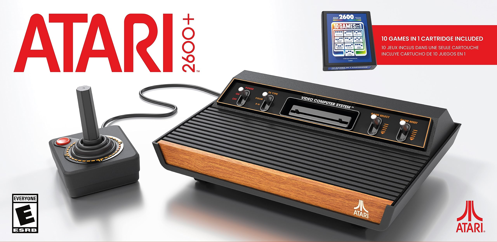
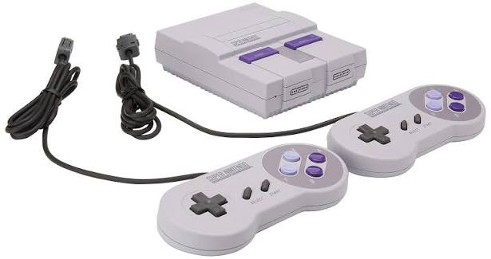
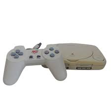

Consoles Classicos
Atari 2600

O Atari 2600 é um console de videogame lançado em 11 de setembro de 1977 nos Estados Unidos e popularizado no Brasil nos anos 1980. Ele revolucionou a indústria ao introduzir o uso de cartuchos intercambiáveis, permitindo trocar de jogos livremente em um aparelho doméstico.
Super Nintendo

O Super Nintendo (SNES), lançado em 1990 no Japão e em 1993 no Brasil, é um console de videogame de 16 bits muito famoso. Ele marcou a história dos games com ótimos gráficos, som estéreo e clássicos inesquecíveis como Super Mario World.
PlayStation

PlayStation (ou PS1) é um console de videogames de quinta geração criado pela Sony Computer Entertainment. Lançado no Japão em 3 de dezembro de 1994, ele mudou a história dos jogos ao usar CDs em vez de cartuchos, permitindo gráficos 3D avançados, trilhas sonoras empolgantes e mais de 100 milhões de unidades vendidas no mundo.